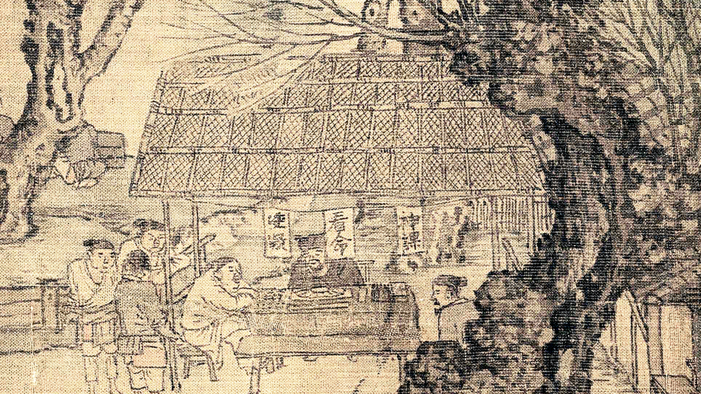
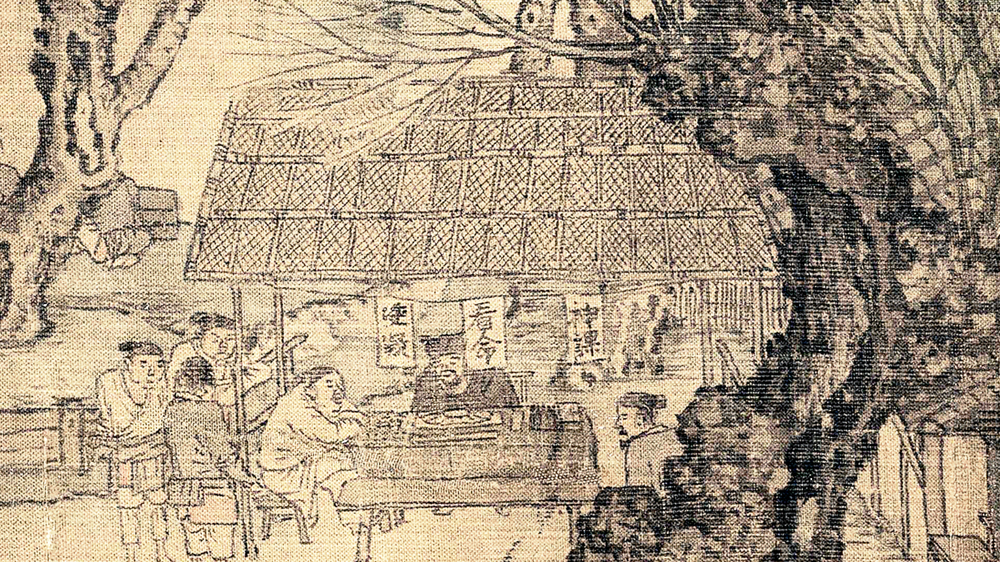

Attributed to Zhang Zeduan
The Song Dynasty original
Handscroll, ink and color on silk, 11th–12th century, 24.8 x 528.7cm
In a painting nearly one thousand years old, shopkeepers tend their stores, teahouses serve customers, and camels pass through the city gates. Although the trees have yet to sprout new leaves, boats are moored along the river as the city springs to life.

The painting, Along the River during Qingming Festival (also sometimes referred to by the title Peace Reigns along the River), attributed to Zhang Zeduan, this painting illustrated a rare glimpse of the thriving commercial activity of medieval China.
Nearly seventeen feet of painting portray a bustling city (possibly Kaifeng, the capital of the Northern Song dynasty, 960–1127), all done with incredible technical skill, precision, and accuracy. Numerous shops, watchtowers, moats, and bridges play host to people from all walks of life, horses, camels, and carts bustling throughout the city. All told, there are 814 humans, 28 boats, 60 animals, 30 buildings, 20 vehicles, 9 sedan chairs, and 170 trees.


 
